The Winter Garden
Early cold season is an ideal time to start a new garden or expand the old one, and getting the soil in shape is always the first step. Mort's "lazy technique" of fertilizing new soil and preparing the seed bed makes planning your spring garden a pleasure.
When I bought the 150-plus year-old house and 100 acres in Maine in 1969, I had no thoughts of be coming a back-to-the-lander. It was an investment. Then, I fell in love that same year with Barbara, and a few years later with the land. We have been living in the now 175-plus year-old house since 1972 and we are currently planning our 24th garden.
Early cold weather is a much a time of renewal as spring. The good is cleared and prepared for the next year's planning and planting.
In many ways, not much has happened to us during that time. Our phone number and address are the same, but the dead elms that surrounded the house when we bought it were used for firewood years ago and replaced with maples. They were twigs when we planted them. Now they tower over us, as do our children. And our garden this year will be in the same place the first one was.
Then the spring rows are set, soil nutrients replenished, seeds planted, and a year's worth of fresh vegetables begins to sprout.
Breaking Soil
There are two jobs that need to be done before planting season begins: A seed bed needs to be prepared and the soil needs to be fertilized. Our first garden was hand dug with a spade. That's the way my father prepared his garden. If he could do it, so could I. I was digging it for Barbara to plant half a dozen tomato plants. Converting sod to garden soil is not an easy task but hand-digging is not the worst method. As I recall, I even enjoyed it. I would have to jump on the spade with all my weight to cut through the mat of grass and roots. The first spadeful had to be cut on all four sides before it could be dislodged and turned. But it got easier. The second spadeful only had to be cut on three sides and after the first row was turned it only took two jumps to turn a clump of sod.
Then each clump had to be banged against the spade to separate the soil from the roots. I doubt that I took more than an hour to prepare that first garden. It was small, but it took the tomato plants Barbara had purchased with plenty of room to spare. I planted a few potatoes right out of the kitchen just to see if they would grow.
There are several advantages to turning the garden by hand rather than using a machine. Most appealing to me is the quiet. It's just me and the spade. I work at my own pace. Barbara says she likes to see me leaning on a garden tool contemplating who-knows-what. I do a lot of leaning just to amuse her. It's also good exercise. You feel a special sense of accomplishment. You don't do violence to the soil. More earthworms survive. It's inexpensive. But perhaps the greatest advantage is that you will not end up with a first garden that is too big and, ultimately, discouraging.
The reason for turning the soil is to disrupt what has been occurring naturally. Nature hates bare soil. If you question this, look around at places where we have tried to keep plants from growing. You have got to admire the dandelion that blooms so early in the spring because it has found a root-hold in a crack in asphalt. Left alone that plant will expand the crack and leave enough organic matter on top of the asphalt for other seeds to take root. Without our species, plants would reclaim our roads, parking lots, and buildings in a surprisingly short period of time. Our gardens and agricultural fields would disappear in a year or two.
DANA PEIRSON
Some think of this as a war against nature. Being more of a pacifist myself, I prefer to think of my relationship with the soil as a partnership. The plants that grow naturally in an area can provide you with heaps of valuable information. I wouldn't, for instance, recommend trying to plant anything but rice in an area that was supporting cattails, but existing growth can tell you much more subtle things. For example, carrots will probably do well in an area that supports Queen Anne's lace, because they are of the same family.
If your proposed garden site has thick, lush grass, it probably has pretty fertile soil. If it is weedy and looks scraggly (a scientific term for poor growth), this soil will need an infusion of organic matter. Both spots provide opportunity and challenge. The rich spot quite possibly has witch grass growing in it. This is challenging stuff. It grows on underground stems called rhizomes. Little bits of the rhizome can sprout a healthy new growth of grass. It grows around the edge of the garden and continually tries to come in, but you can keep it under perimeter control by cultivating the edge of the garden a couple of times a year.
Getting it out of our garden in the first place was a bit more of a challenge. It seemed to be well-named, as it popped up all over the place. You can eliminate it in a small garden through vigilance. Just keep after it. A three- or four-pronged cultivator is best for digging under the rhizomes and pulling them to the surface. In a field it is best to till and then cultivate, removing the rhizomes from the surface. In 10 days till and cultivate again. A third tilling in another 10 days should get the rhizomes down to a manageable level. Cultivation of the crops through the season will pretty much put you on top of the situation after that.
Poor soil gives you the opportunity to become a wizard. Pile on a lot of not-toopotent manure like horse or cow, and till it in. Control weeds during the growing season by mulching heavily with hay, straw or grass clippings. The results the first year will be better than your neighbors thought possible, and your soil will be well on the way to something you can be proud to have built.
Adventures in Fertilizing
I did not add any nutrients to my first garden. It turns out they weren't needed.
The sod I was turning was growing very tall, very green, very healthy looking grass. It had not been used as a garden for quite a while, if ever. It may even have been an animal pen at some time as there is the remnant of a small foundation in the area.
I had success once, so I figured it would work again. If our forefathers could get away without fertilizer for several years as they moved west across the plains, why couldn't I? When I went to the farm store to buy seed potatoes, Earl asked me if I wanted fertilizer. "No," I proudly proclaimed, "I'm not using any."
"Better eat those potatoes, then." He sold me a small bag of 5-10-10.
I wasn't really convinced, but he managed to shake my confidence a tad. This resulted in my first experiment. I used the 5-10-10 on half the row and left the other half alone. If there was any difference, it was too subtle for me to notice. That half row of 5-10-10 is the only chemical fertilizer I have ever used. Some people might call me a died-in-thewool organic agriculturist. Frankly, I think I'm just plain lazy, but the former term plays better at parties. I can't see trying to agonize over what each individual plant needs and when it needs it. If I wanted to be a mother hen, I'd raise chickens. Last summer in Maine (very much like this summer), we had record heat and record drought. People were watering gardens like mad, and farmers without irrigation were in trouble. I checked the garden several times to see if it needed water. It never did. The soil started showing moisture half an inch deep. Plants never withered. Cucumbers, tomatoes, and corn all filled out properly. Because of the heat I got the best crops ever.
Breaking soil: Mow an approximately 30 square-foot area for first-planting. Dig the area, separate the roots from the soil, and pulverize the soil with your hands to prepare a seed bed. Here I plant cucumber seeds in an isolated, mulched (with grass clippings) area. The developing plants will then spread over the new bed.
I do fertilize now, but just don't rely on chemicals to do it. I look on my technique as more of a replacement of what my garden is using each year than an artificial augmentation. Every year I put some bulky organic material on the garden. I get best results when I spread manure or seaweed just before turning the soil. Incorporating it with the soil as soon as you spread it minimizes the amount of nitrogen lost to the air. It also gets it out of the way of planting. Spreading that bulk material is one of the spring activities that can sometimes cause sore muscles. A pickup-truck load of manure per 2,000 square feet translates into 22 loads for an acre, and you want to be in shape if you are fertilizing an acre from the back of a pickup truck. I've done that, and while I may not have been in shape when I started, I sure felt great when I finished-toned muscles and callused hands.
Engine Power
As my garden got bigger, 1 thought I'd very, very quickly outgrow my spade for the lion's share of the yearly tilling. My first attempt at harnessing a powered tiller to solve that problem remains the stuff of family lore.
It was June 1, two years after that first garden, and it was our intention to raise as much of our own food as possible. No other source was assured. I left Barbara one morning and refused to come back without a rented tiller. Unloading it a few hours later, I jumped it to life and prepared myself to turn sod into beautiful garden soil in record time. And then I descended into hell. If you have never tried to break sod with a fronttined tiller, it will be hard for me to describe fully the task at hand, but I'll try. A front-end tiller has tines that turn in such a way as to pull the tiller forward. If the tiller has wheels, they just turn as the tiller moves. Perfectly simple.
A MARKET GARDENTending an acre for profitis easier than you imagine.
I positioned the beast carefully where I wanted to start, on the northwest corner of the would-be garden. I lowered the tines to the ground and suddenly found myself at the southwest corner of the would-be garden. I must have looked like a water skier, and felt as if my arms had been yanked out of their sockets. Finally getting it under control, I wheeled it back to my starting place. I tried again only this time I braced myself so I could hold the tines in one place while they did their job of digging into the sod. It worked, but took a while to beat its way deep enough to call the soil sufficiently tilled.
When each small patch was chewed up, I eased forward enough to let the tines pull the tiller out of the hole and up onto the top where I held it again. I toiled all afternoon like this, muscles straining to hold the tiller in place while the tiller vibrated my entire body. I stopped only to put gas in the machine and to eat. I bounced along, more bounce than along, until dark. I set the alarm for daybreak with plans for another five hours of tilling before I had to return the machine, and dropped into a deep sleep.
There is a tremendous luxury to a good power tiller, but I still tend my acre of market garden largely by hand.
When the alarm went off, I found that I couldn't move. Barbara had to reach across me to turn the alarm's ringer off. She also had to load the tiller on the truck, and she also had to do just about everything else for me that day. I ached everywhere. I had tilled about 400 square feet.
I could have done as good a job with a lot less violence to my body with a spade. Without the pressure of having to return the tiller, I could have paced myself. It might even have been enjoyable if I had alternated preparing the soil with planting. Gardening isn't a race, but I turned it into one-and paid the price.
Whatever your technique of breaking ground, it may be a stretch to call that newly chewed up sod garden soil. It is still clumpy and full of organic matter from the plants that were growing there. Raking it is a chore that provides limited results, and you can't just remove the clumps that are left, because they contain much of the richness of the soil. In those early years I just dealt with it as best I could. When preparing a bed for small seeds like lettuce and carrots, I worked over the soil with a rake, getting some of the soil separated from the clumps of roots. When I got tired of raking or the bed seemed reasonably smooth-probably the same thing-I would have generated a row of material that had been pulled from the bed. I just left this aside as part of the walkway.
Expanding the Garden
It took us three years, not counting the hand-dug patch, to reach vegetable selfsufficiency. Each year the garden expanded and I became more efficient. I also learned that a packet of peas was not enough and a packet of lettuce was too much. Each garden after the first was planned during the winter and plotted on paper. Before spring came, I knew what was going to be planted where and I even had a target date for the planting.
Once we were growing and storing all our own vegetables, the next challenge was to see if we could make some money from the knowledge we had acquired. The move to a market garden happened two years later.
I started preparing an acre the fall before. I spread rock phosphate and winter rye seed on the sod and lightly tilled it in. It was pretty lumpy but I didn't care. I was all through until spring other than taking soil samples to test the fertility.
The rye got a good start that fall and started growing again in the spring. I spread lime on the rye as the soil test had indicated, as well as a helping of seaweed to provide other nutrients. ( We live seven miles from the coast.) I tilled it twice this time. That made a big difference, but I still had to rake the beds. Tending a market garden without any power tools is a challenge but it can be done. I found it to be much easier than I imagined, although it took a few years of practice before I learned the techniques that you need when you garden on a larger scale.
A tool that was indispens able in the market garden was the seeder. Pushing it along the row, it opened the ground, dropped the seeds at just the right spacing, closed the ground over the seeds, firmed the soil around the seeds and marked the next row. However, even with two tillings, there were soil clumps that would snag on the planter and create problems.
Then along came my neighbor Ed, extolling the virtues of his rear-end walks-behind tiller. I'd read all the advertising, but wasn't convinced. Ed loaned-me his and I found that it had a place in my market garden, even if it meant betraying my principles slightly. I used it to prepare beds just before planting and then several more times throughout the planting season to prepare the beds so the seeder would operate well. The lap of luxury.
Saving Your Back
There is yet another great way to turn sod to garden. Sod is a complex mat of growing things. It is mostly grasses, but there are most likely a variety of other weeds as well. This living mass will not give up life easily. There will be plenty of seeds there to repopulate the area in just such an event as tilling. Some of the grasses can prop agate from bits of root and some have such a dense mass of roots that they will hold onto enough soil to continue living. When we try to turn sod to soil we are trying to kill the plants that are living there naturally, so that the plants we want to grow can survive. Mashing, chopping and uprooting is one way to get rid of them. Another way is to smother them.
That sounds rather drastic but it is probably the gentlest way to make the conversion. It requires planning ahead. The summer or fall before planting, cover the area that is to be your garden with a thick layer of mulch. Mow the area first. If you are mowing foot-high grass, you will get enough clippings to cover about one fifth of the area. Cover the rest with spoiled hay, leaves or straw. If you really want to get things cooking, spread manure before mulching. In the spring you will have a good start on preparing the garden soil. Transplants and larger seeds can be planted by pulling back the mulch just enough to get the job done. For small seeds you will probably want to rake the mulch off and prepare a bed. A spading fork will do a great job of turning this soil. It won't need to be cut like sod. The fork will do its job with one thrust, in most instances, just as it will in an established garden. A garden rake will finish the job of preparing the bed.
Here's a way to prepare for a larger garden next year while using the mulch area this year. Let's say you are planning your first garden this year and you take my advice and start small, with 400 square feet. Let's say that you have more area that you want to make into a garden and you are dying to get at it. You also have more things you want to plant than you can possibly fit into a 400 square foot garden.
We've provided photographs of this process on pages 52 and 53, so flip back if you get lost. First, mow the area where you will be expanding next year. Dig up an area a foot or two in diameter in the center of a five-foot by five-foot area.
Separate the roots from the soil and pulverize the soil with your hands to prepare a seed bed. If the soil is growing vigorous grass it will probably support a change in crop for the first year, but you might want to add compost. Rake the grass clippings up close to this dug-up area, and plant cucumbers in it. The 25 square feet of area provided for the cucumbers to grow onto should provide enough grass clip pings to mulch a foot-wide ring of mulch around the planting. Winter squash and pumpkins need a ten foot by ten foot square and summer squash can get by with a three or four foot to the side square.
That is the start. Now you need to fill in the rest of the area with other mulch. When I use leaves, I usually cover them with a light amount of grass clippings or hay to keep them from blowing. If things grow up through the mulch, add more.
Plastic or newspapers can also be used. I prefer natural materials, because they add fertility to the soil as they break down into rich humus. Plastic will degrade in the sun; you will have to remove it eventually. Newspapers break down and don't have to be removed. Their only drawback is that they lack nutrients and the ink is left in your soil. This potential garden toxin has been the subject of much controversy over the past 10 years or so. I never considered ink a problem, but some people did, and as a commendable consequence of their efforts, most newspapers are now printed using soy-no thanks to me.
Mulch is wonderful for adding nutrients, increasing humus, suppressing weeds, retaining moisture, and making a garden almost self-sufficient. However, it is no better than any other potential panacea you ever came across. It also harbors slugs, brings in weed seeds, and is loved by witch grass. Through years of research in my garden (some would term it trial and error) and in books, I have come to love mulch. It creates comparatively few problems and is an important part of being a lazy gardener.
Converting sod to soil is not a once-in-a-lifetime experience, even when you live in the same place. This year Barbara noticed that the garden had migrated. It has been moving away from the house and she wanted it to come back. Each year, I guess, I let the grass of the lawn encroach a little and then till to the new line. This year we brought the garden six feet back toward the house. That newly turned soil was just as lumpy as the first garden's. We planted potatoes and mulched them heavily and now the garden is back where it belongs. It was a lot easier to plant the potatoes and mulch than to rake and fuss over that area.
Mark Twain said, "Experience is the best way to find out about something. Fellow who takes ahold of a bull by the tail once is getting 60 or 70 times as much information as the fellow who hasn't. Anybody who sets in to carry a cat home by the tail is gaining knowledge that's always going to be useful .... Chances are he won't carry a cat that way again. But if he wants to carry the cat that way, I say let him. It isn't always easy to be eccentric."
So put your coat on and get started.
|
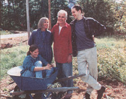 |
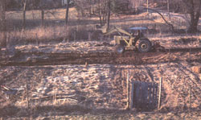 |
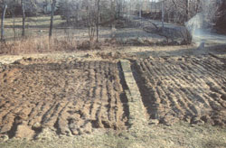 |
|
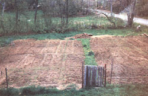 |
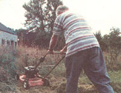 |
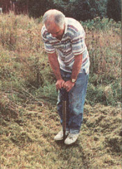 |
|
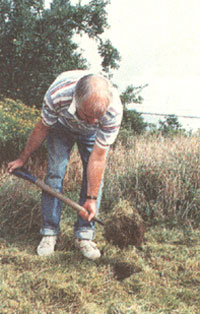 |
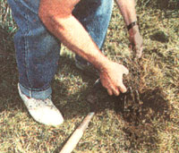 |
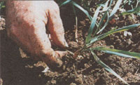 |
|
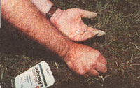 |
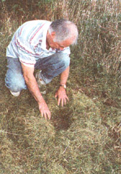 |
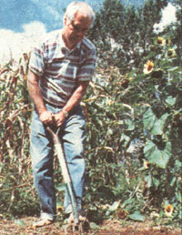 |
|
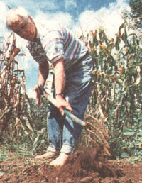 |
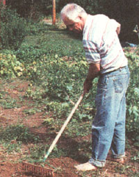 |
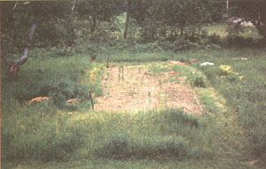 |
|
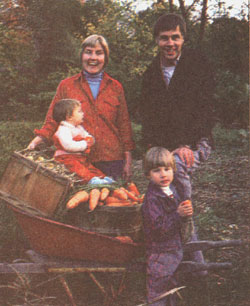 |
|
|